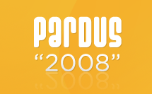

One more step for freedom: Pardus 2008New version of the Pardus project, Pardus 2008, improved by the latest technologies and up-to-date applications, has been released. As always, Pardus 2008, is being freely distributed under the terms of GNU General Public License (GPL). In compliance with the main goals of the Pardus project, Pardus 2008 has lots of new features for ease of installation and use, both at the infrastructure and interface level. In addition Pardus 2008 provides enhanced hardware support, stable and reliable Linux infrastructure and numeruous applications on a single CD. You will go through a brand new experience of freedom, using Pardus 2008 You may have a look at Release Notes to see what's new in Pardus 2008, and you may download Pardus 2008 from the Download page. We wish you days in freedom, using Pardus 2008... |
|
Information and documents on Pardus web pages can be used freely anywhere with original source credit.
For information and suggestion(s) please write to info_at_pardus.org.tr
TÜBİTAK - UEKAE, PK.74 41470, Gebze / Kocaeli.